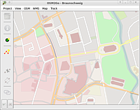

OSM2Go
Archivierte Anleitung
Dieser Artikel wurde archiviert, da er - oder Teile daraus - nur noch unter einer älteren Ubuntu-Version nutzbar ist. Diese Anleitung wird vom Wiki-Team weder auf Richtigkeit überprüft noch anderweitig gepflegt. Zusätzlich wurde der Artikel für weitere Änderungen gesperrt.
Anmerkung: st längerem ungetestet
Zum Verständnis dieses Artikels sind folgende Seiten hilfreich:
OSM2Go  ist ein Karteneditor für OpenStreetMap, der für die mobile Datenerfassung mit einem Nokia Internet Tablet N800/N810 konzipiert wurde. Der Fokus bei diesem Editor liegt auf kleinen (mobilen) Endgeräten und einer einfachen Bedienung. Die Software ist in GTK+/C geschrieben; sie läuft daher auch auf anderen Linux-Systemen, auf denen das Gimp Toolkit (GTK+) installiert ist.
ist ein Karteneditor für OpenStreetMap, der für die mobile Datenerfassung mit einem Nokia Internet Tablet N800/N810 konzipiert wurde. Der Fokus bei diesem Editor liegt auf kleinen (mobilen) Endgeräten und einer einfachen Bedienung. Die Software ist in GTK+/C geschrieben; sie läuft daher auch auf anderen Linux-Systemen, auf denen das Gimp Toolkit (GTK+) installiert ist.

Hinweis:
OSM2Go ist ein noch recht junger Karteneditor, der erst seit Sep. 2008 verfügbar ist; mit dem einen oder anderen Fehler in der Programmausführung ist daher noch zu rechnen. Fehler können nach entsprechender Anmeldung über die OSM2Go-Mailingliste gemeldet werden.
Installation¶
Seit der Version 0.6.13 gibt es für OSM2Go ein deb-Paket, mit dem die Anwendung sehr einfach installiert [6] werden kann. Das deb-Paket kann über den Download-Link auf der Projektseite bei maemo.org heruntergeladen werden. Aktuell (Nov. 2009) funktioniert beim veralteten deb-Paket der Uploadvorgang zum OSM-Server nicht mehr. Bis ein neues deb-Paket zur Verfügung steht, muss OSM2Go aus den Sourcen des Maemo-Repository kompiliert werden. Siehe dazu auch folgenden Thread im Forum.
Hinweis!
Fremdpakete können das System gefährden.
Benutzung¶
Übliche Vorgehensweise¶
OSM2Go ist dafür konzipiert, unterwegs mit einem mobilen Endgerät Wege aufzuzeichnen und gleich zu mappen. Dabei wird die jeweils aktuelle Position und die zurückgelegte Wegstrecke direkt in der OSM-Karte angezeigt. Es ist also unmittelbar ersichtlich, welche Straßen und Wege bereits eingezeichnet sind, und wo ggf. noch Informationen fehlen. Die noch fehlenden Informationen können dann direkt vor Ort, wo sich alle benötigten Informationen schnell und einfach ermitteln lassen, in der Karte ergänzt werden.
Die übliche Vorgehensweise für die Nutzung von OSM2Go ist daher folgende:
Zuerst wird für das Gebiet, das man bearbeiten möchte, ein Projekt angelegt.
Bevor man dann mit dem Mappen beginnt, werden erst alle Kartendaten dieses Gebietes vom OSM-Server auf den eigenen Rechner heruntergeladen und im Projekt gespeichert.
Anschließend macht man sich auf den Weg und beginnt damit, innerhalb des gewählten Gebietes Wege aufzuzeichnen und zu mappen. Sämtliche Änderungen in der Karte werden dabei vorerst nur lokal auf dem eigenen Rechner gespeichert.
Wenn man mit dem Mappen fertig ist, werden abschließend alle in der Karte vorgenommenen Änderungen wieder zum OSM-Server hochgeladen.
Möchte man in demselben Gebiet ein weiteres Mal mappen, braucht man nur das Projekt neu zu laden, die jüngsten Änderungen vom OSM-Server herunterladen und kann dann erneut loslegen.
Ebenso wie bei anderen OSM-Editoren ist es aber auch möglich, die zurückgelegte Wegstrecke als GPX-Datei einzulesen und dann zu mappen.
Projekt anlegen/öffnen¶
Bei OSM2Go werden die zu bearbeitenden Kartenausschnitte in Projekten verwaltet. Dabei wird jeder Kartenausschnitt mit allen darin enthaltenen Zweigen und Knoten als eigenes Projekt auf dem Rechner lokal gespeichert. Um einen Kartenausschnitt zu bearbeiten, muss also erst ein entsprechendes Projekt angelegt bzw. geöffnet werden.
Das Anlegen eines neuen Projektes geschieht wie folgt:
Auswahl des Menüpunktes "Project -> Open..." und Klick auf "New..."
Zuweisung eines Projektnames und Bestätigung mit "OK"
In der darauf folgenden Maske wird unter "Descriptions" eine kurze Beschreibung eingetragen.
Danach wird der Kartenausschnitt über den Button "Edit..." ausgewählt. Hier hat man dann die Möglichkeit, entweder die Begrenzungskoordinaten des Ausschnittes, also die Min- und Maxwerte der Längen- und Breitengrade einzutragen (Reiter "Direct"), oder es werden die Mittelpunktskoordinaten und die Breite und Höhe des Kartenausschnittes in km/Meilen angegeben (Reiter "Extend").
Anschließend werden die Kartendaten des gewählten Ausschnittes vom OSM-Server heruntergeladen; dazu wird der Button "Download..." angeklickt.
Durch Klick auf "OK" wird das neu angelegte Projekt dann zur Bearbeitung ausgewählt.
Hinweis: Der aktuelle Download der OSM Karte ist nur unter http://api.openstreetmap.org/api/0.6 möglich. Der Eintrag im Downloadbereich ist entsprechend zu ändern.
Möchte man ein bereits bestehendes Projekt bearbeiten, reicht es aus, unter dem Menüpunkt "Project -> Open..." das gewünschte Projekt auszuwählen und mit dem Button "Open" zu laden. Bevor man mit dem Mappen beginnt, müssen natürlich noch die aktuellen Daten des Gebietes über den Menüpunkt "OSM -> Download..." vom OSM-Server heruntergeladen werden.
Karte editieren¶
OSM2Go bietet einige grundlegende Funktionen für das Editieren der Karte. Dazu zählt das Verschieben von Wegelementen in der Karte; aber auch verschiedene Bearbeitungsfunktionen, die über die Symbole in der linken Menüspalte ausgewählt werden. Die meisten der Menüpunkte sind allerdings erst nach Auswahl eines Kartenelementes anwählbar.
Lage eines Knotens oder Wegverlauf ändern¶
Um die Lage eines Knotens zu verändern, klickt man mit der linken Maustaste auf den betreffenden Knoten, hält die Maustaste gedrückt und verschiebt dann den Knoten an die neue Position. Danach lässt man die Maustaste wieder los.
Um den Verlauf eines Weges zu verändern, verfährt man im Prinzip genauso wie zuvor beim Knoten beschrieben; nur wird in diesem Fall der Knoten innerhalb einer Wegstrecke ausgewählt.
Element löschen ("Delete item")¶
Mit diesem Button wird ein zuvor ausgewähltes Kartenelement gelöscht.
Achtung!
Eine Rückgängig-Funktion ist in OSM2Go bislang noch nicht implementiert. Ein gelöschtes Kartenelement kann also nicht einfach wieder hergestellt werden.
 Eigenschaften ("Properties")¶
Eigenschaften ("Properties")¶
Über diesen Menüpunkt können die Eigenschaften eines Knotens oder einer Wegstrecke angezeigt, hinzugefügt oder geändert werden. Nach Klick auf den Button erscheint eine Liste mit den Eigenschaften des zuvor ausgewählten Elementes; darunter befinden sich 5 Buttons, mit denen die Eigenschaften des Elementes geändert, ergänzt oder gelöscht werden können.
Mit dem Button "Last..." lassen sich die Eigenschaften des zuvor bearbeiteten Elementes auf das ausgewählte Element übertragen.
Bei Klick auf "Presets..." erscheint eine Auswahlliste {englisch-sprachig} mit allen verfügbaren Kartenelementen. Nach Auswahl des Elementes, das dem Zweig oder Knoten zugewiesen werden soll, können über eine weitere Eingabemaske alle für das ausgewählte Element üblichen Eigenschaften eingegeben werden.
Mit dem Button "Add..." können einzelne Eigenschaften ergänzt werden.
Mit dem Button "Edit..." lässt sich der Wert einer zuvor ausgewählten Eigenschaft ändern.
Mit dem Button "Remove" lässt sich eine zuvor ausgewählte Eigenschaft löschen.
Die vorgenommenen Änderungen werden mit dem "OK"-Button übernommen.
Knoten hinzufügen ("Add node")¶
Mit diesem Button lässt sich ein neuer Knoten hinzufügen. Nach Klick auf diesen Button muss als nächstes die Position des Knotens in der Karte angeklickt werden. Anschließend erscheint das bereits im Abschnitt "Eigenschaften" beschriebene Menü, mit dem sich die Eigenschaften des neuen Knotens hinzufügen und ggf. auch ändern lassen.
Wegstrecke hinzufügen ("Add way")¶
Mit diesem Button lässt sich eine neue Wegstrecke oder ein Polygon (geschlossene Wegstrecke) hinzufügen. Nach Klick auf diesen Button werden als nächstes die Wegpunkte des Weges der Reihe nach in der Karte angeklickt. Mit jedem neuen Knoten wird die Wegsrecke dabei um ein Segment verlängert. Die Eingabe der Wegstrecke in der Karte wird beendet durch Klick auf den Bestätigungs-Button unten links, oder bei einem Polygon durch Klick auf den Anfangsknoten. Anschließend erscheint das bereits im Abschnitt "Eigenschaften" beschriebene Menü, mit dem sich die Eigenschaften der neuen Wegstrecke hinzufügen und ggf. auch ändern lassen.
Knoten in Wegstrecke einfügen ("Add a node to a way")¶
Mit diesem Button wird einer zuvor ausgewählten Wegstrecke ein neuer Knoten hinzugefügt. Nach Klick auf diesen Button braucht nur noch die Position des neuen Knotens in der Karte angeklickt zu werden.
Wegstrecke splitten ("Split a way")¶
Mit diesem Button kann eine zuvor ausgewählte Wegstrecke in zwei Abschnitte geteilt werden. Nach Klick auf diesen Button muss anschließend der Wegpunkt in der Strecke ausgewählt werden, an dem die Teilung stattfinden soll.
Achtung!
Wird versehentlich anstelle eines Wegpunktes die Verbindung zwischen 2 Wegpunkten angeklickt, wird diese Verbindung gelöscht. Eine Rückgängig-Funktion ist noch nicht implementiert, die Löschung kann also nicht zurückgenommen werden.
Wegrichtung umkehren ("Reverse way")¶
Durch Klick auf diesen Button wird die Richtung des ausgewählten Weges umgekehrt. Ein nochmaliger Klick stellt die ursprüngliche Richtung wieder her.
Relationen bearbeiten ("Edit items relations")¶
Über Relationen können in OpenStreetMap mehrere Wegstrecken zu einem Objekt zusammengefasst werden. Dabei kann es sich z.B. um mehrere Straßen handeln, die zu einer Buslinie gehören. Alle Straßen dieser Buslinie erhalten dann die Relation route mit dem Namen der Buslinie. Durch Klick auf diesen Button kann das zuvor in der Karte ausgewählte Element einer Relation zugeordnet werden. Die vorhandenen Relationen lassen sich nach Klick auf den Button zudem auch noch bearbeiten (Button "Edit..."); das Erstellen einer neuen Relation oder das Löschen einer bestehenden Relation ist jedoch noch nicht möglich.
Verschiedenes¶
Wegstrecke aufzeichnen¶
Über den Menüpunkt "Track GPS" kann die Aufzeichnung der aktuellen Positionsdaten und deren Darstellung in der Karte aktiviert werden. Damit ist es möglich, gerade zurückgelegte Wege unmittelbar zu mappen. Voraussetzungen hierfür sind, dass ein GPS-Empänger angeschlossen ist, der die Positionsdaten liefert, und dass der Dienst
gpsd (gps-daemon)
im Hintergrund läuft, über den OSM2Go die Positionsdaten erhält.
Wegstrecke importieren¶
Die mit einem GPS-Empfänger aufgezeichneten Wegstrecken können über den Menüpunkt "Track -> Import..." geladen werden. Die zu importierenden Daten müssen im GPX-Format vorliegen.
Navigation in der Karte¶
Die Änderung des Kartenausschnittes ist entweder per Maus- oder per Tastensteuerung möglich.
Bei Maussteuerung wird die linke Maustaste betätigt und der Kartenausschnitt dann entsprechend der Mausbewegung verschoben, das Vergrößern oder Verkleinern des Kartenausschnittes erfolgt über das Mausrad.
Bei Tastensteuerung erfolgt die Verschiebung des Kartenausschnittes mit den Pfeiltasten ← , → , ↑ und ↓ , das Verkleinern oder Vergrößern des Kartenausschnittes geschieht über die Tasten + und - .
Desweiteren ist eine Verkleinerung oder Vergrößerung des Kartenausschnittes auch über den Menüpunkt "View -> Zoom +" bzw. "View -> Zoom -" möglich.
Kartenlayout ändern¶
Das Layout der Kartendarstellung lässt sich über den Menüpunkt "Map -> Style..." verändern. Als Style-Vorlagen stehen Mapnik  , Potlatch , JOSM und "JOSM wireframe" (einfache vektorielle Darstellung in JOSM) zur Verfügung. Durch Aktivieren von "View -> Fullscreen" kann auf Vollbilddarstellung umgeschaltet werden.
, Potlatch , JOSM und "JOSM wireframe" (einfache vektorielle Darstellung in JOSM) zur Verfügung. Durch Aktivieren von "View -> Fullscreen" kann auf Vollbilddarstellung umgeschaltet werden.
Weitere Hinweise zur Benutzung der Software findet man im OpenStreetMap-Wiki .
- Erstellt mit Inyoka
-
 2004 – 2017 ubuntuusers.de • Einige Rechte vorbehalten
2004 – 2017 ubuntuusers.de • Einige Rechte vorbehalten
Lizenz • Kontakt • Datenschutz • Impressum • Serverstatus -
Serverhousing gespendet von